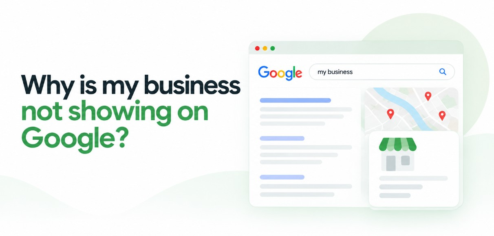

If you've searched for your own shop and wondered why is my business not showing on Google, you're far from alone. A family in Kozhikode needs a dentist near Mavoor Road, so they search, glance at the map and call the clinic at the top. Your clinic is three minutes away, but it isn't on their screen. A business not showing on Google Maps or Search loses calls it never hears about.
Here's the reassuring part. Google doesn't hide businesses at random, and at Bamboost we find the cause almost always falls into one of five problems. Some take minutes to fix, while others depend on Google and need patience.
If you're asking why is my business not showing on Google, it's usually one of five reasons: the profile isn't created or verified, recent changes are still processing, the profile is too weak to compete, the listing has been suspended or duplicated, or Google can't index your website. The checklist below shows which one applies to you.
First, Check Where You're Missing
Two quick searches will tell you which problem you have. Google's own advice is to sign in to the account that manages your profile, then search your business name plus your city, or simply search "my business" (Google's guide to finding your business).
Next, open a private browser window and search the way a new customer would: your service plus your area, such as "dentist in Kakkanad". The first search shows whether Google knows you exist. The second shows whether it chooses you for new customers. Match what you see to this table.
| What you see | Likely cause | Go to |
|---|---|---|
| No profile at all | Not created or not verified | Problem 1 |
| Verified, but not visible | Still processing or recent edits | Problem 2 |
| Shows for your name, not for your service | Weak profile or strong competition | Problem 3 |
| It was there, now it's gone | Suspended or duplicate listing | Problem 4 |
| Profile is fine, website is missing | Indexing problem | Problem 5 |
Problem 1: You Don't Have a Profile Yet (How to Add Your Business on Google Maps)
If nothing appears for your name and city, you most likely don't have a Google Business Profile, or you have one that was never verified. Google only shows a business's information on Maps and Search after it's verified.
Owners often search "how to add my business on google map" and then "how to add my business on google search", expecting two separate jobs. It's one job. A single Google Business Profile covers both Google Maps and Google Search.
- Create the profile. Sign in to Google Business Profile with an account your business will keep, not a staff member's personal one.
- Enter your real business name. Use the name on your signboard, with nothing added.
- Choose the correct primary category. Pick the most specific option, such as "Dental clinic".
- Add your address or service area. Use your shop address, or set the areas you serve if you travel to customers.
- Verify the profile. Google shows you the verification options available for your business. Follow Google's official verification guide.
A tip for home-based businesses in Kerala: tuition teachers, home caterers and beauticians who visit clients should set up as a service-area business. Google's Business Profile guidelines ask service-area businesses to hide their address from customers. Your home address stays private, and you can still appear in the places you serve, such as Feroke.
Problem 2: Why Is My Verified Business Not Showing on Google?
A verified profile that doesn't appear yet is usually still waiting on Google, not broken. Google says a new business can take up to a month to show up in results, and edits to business information can take up to 3 days to appear.
Use that waiting time to run these checks inside your profile:
- Open or closed status: make sure the profile isn't marked as temporarily or permanently closed.
- Address and map pin: confirm the pin sits on your actual building. A pin on the wrong street in Kochi can place you in the wrong neighbourhood.
- Pending edits: if you recently changed your name, category or address, those changes may still be under review.
If you're still missing a month after verification, even for your exact name, stop editing and contact Google Business Profile support through the Help Centre. Keep a note of what you changed and when.
Problem 3: You Show Up for Your Name, but Not for Your Service
This is the situation we see most often: Google knows your business, but other businesses appear ahead of you when people search for what you do. Your profile isn't missing. It's being outranked.
A search for "physiotherapy in Kozhikode" has dozens of possible answers, so Google has to choose, and a thin or inconsistent profile rarely wins. These are the fixes we start with:
- The right primary category: match it to your main service. A homestay in Munnar listed under a general hotel category may not match people searching for homestays.
- A complete profile: fill in hours, services, description, phone and website.
- Consistent name, address and phone: use exactly the same details on JustDial, Sulekha, Facebook and your own website.
- Genuine reviews: ask happy customers to leave one, and reply to every review you get.
- Real photos: your shopfront, interior and team, not stock images.
If you only go missing for service searches, start with these basics. In our experience, they're the usual reason for a business not showing on Google Maps for anything except its own name. For more, read our guide on how to rank higher on Google Maps.
[ADD: real Bamboost client example — what was wrong, what was fixed, how long it took]
Problem 4: Your Google Business Profile Was Suspended or Disappeared
If your profile used to appear and has now vanished, check for a suspension notice or a duplicate listing first. Google can disable or suspend profiles that break its guidelines, and it notifies the owner through the Google account that manages the profile.
A Google Business Profile suspended notice usually traces back to a guideline problem. Common causes include:
- Extra words in the business name, such as "Best Dental Clinic Kozhikode" when your signboard says "Smile Dental". The guidelines don't permit unnecessary information in the name.
- A virtual office or PO box as the address. Neither is eligible for a profile.
- Duplicate listings for the same business.
- Misleading information, such as an address you don't operate from or services you don't offer.
Finding duplicate listings
Search your business name on Google Maps and scroll through every result, because an old listing created by a former employee can still carry your name. Google allows only one profile per business, so claim the duplicate if you can, or ask Google Business Profile support to remove it or merge it with your main profile.
Appealing a suspension
Fix the cause first, and gather evidence that your business is real, such as photos of your signboard and shopfront. Then follow Google's official steps to fix suspended or disabled profiles and submit an appeal. Google doesn't publish a fixed timeline for appeals, so be wary of anyone who promises one.
A Business Profile suspension is different from a website penalty. A suspension is fixed by following Business Profile guidelines, while website problems are fixed on your site and in Google Search Console. Fixing one won't fix the other.
Why is my business not showing on Google anymore? If it appeared before and doesn't now, the usual reasons are a suspension, a duplicate listing, a closed status set by mistake, or a recent edit still under review.
Problem 5: Your Profile Is Fine, but Your Website Isn't on Google
When your profile appears but your site doesn't, it's usually an indexing problem with the website. Three checks will tell you a lot:
- Search
site:yourdomain.comon Google. If no pages appear, Google hasn't indexed your site. - Open Google Search Console and run the URL Inspection tool on your homepage to see whether Google can index it.
- Ask your developer to check your robots.txt file and look for noindex tags. Both can tell Google to skip pages.
Each of these has its own fixes, which we explain in our technical SEO guide.
How Long Does It Take to Show Up Again?
That depends on the fix. Google publishes timelines for only two situations, so where it gives no figure, we've written "varies" rather than guess.
| Fix | Realistic timeline |
|---|---|
| New profile appearing after verification | Up to a month (Google) |
| Edits to name, hours or address | Up to 3 days (Google) |
| Completing verification | Varies |
| Category, photo and review improvements | Varies |
| Removing or merging a duplicate | Varies |
| Suspension appeal | Varies (Google gives no fixed timeline) |
| Website indexing fixes | Varies |
Mistakes That Keep Your Business Hidden
Some well-meant habits create new problems or slow down the fix. Avoid these:
- Adding city or service keywords to your business name. It can lead to a suspension.
- Creating a second profile instead of fixing the first. You end up with a duplicate.
- Using different phone numbers on different sites. It confuses customers.
- Buying fake reviews. It breaks Google's rules.
- Editing core details again and again. Each edit adds to the wait.
Frequently Asked Questions
Conclusion
Working out why is my business not showing on Google is mostly a process of elimination. Check where you're missing, match what you see to one of the five problems, and fix that cause before changing anything else. Some fixes show within days. Others depend on Google, so accurate details and patience will serve you better than repeated edits.